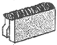
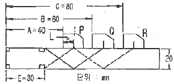
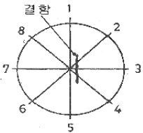

초음파비파괴검사기사 (2014-08-17 기출문제)
1과목: 비파괴검사 개론
1. 감마선과 초음파의 공통점은?
- 진공을 투과한다.
- 철강을 전리시키면서 투과한다.
- 에너지를 지니고 있으나 질량이 없다.
- 결함에서 반사와 산란하는 성질을 이용하는 비파괴 검사 선원이다.
(정답률: 68%)

2. 비파괴검사의 종류에 해당되지 않는 것은?
- 충격측정시험
- 전기전도율시험
- 적외선분석시험
- 암모니아변색법
(정답률: 90%)
3. 침투탐상시험에 사용되는 침투액의 특성으로 틀린 것은?
- 적심성이 좋아야 한다.
- 인화점이 낮아야 한다.
- 비휘발서이 이어야 한다.
- 색채곤트라스트가 높아야 한다.
(정답률: 81%)
4. 다음 중 방사선 계측기를 이용하는 누설검사에서 추적 가스로 사용되는 것은?
- Kr
- Ar
- Rn
- NH3
(정답률: 49%)
5. 방사선투과시험의 장점을 옳게 설명한 것은?
- 방사선투과시험은 다른 검사법에 비해 조작이 쉽고 간편하다.
- 방사선 조사방향과 관계없이 모든 결함을 검출할 수 있다.
- 방사선투과시험은 양 면에 접근하지 않고 한 면에서 검사가 가능하다.
- 금속 및 비금속 재료의 시험에 적용 가능하며, 두께 차를 가지는 구상 결함의 검출이 우수하다.
(정답률: 68%)
6. 내식성 Al합금에 대한 설명 중 틀린 것은?
- 라우탈 합금은 Al-Cr-Mo계 합금이다.
- 하이드로날륨 합금은 Al-6~10%Mg 합금이다.
- 알드레이 합금은 Al-0.45~1.5Mg-0.2~1.2%Si 합금이다
- 알크레드는 고강도 Al하 합금 표면에 순 Al 또는 내식성 Al합금을 피복한 합금판재이다.
(정답률: 57%)
7. 고체 상태에서 낮은 음력에 의해 수백% 이상 연신을 일으키는 합금은?
- 비정질합금
- 초전도합금
- 형상기억합금
- 초소성합금
(정답률: 43%)
8. 반도체(semlconductor) 재료가 아닌 것은?
- Si
- Ti
- Ge
- GaAs
(정답률: 71%)
9. 탄소강에서 황(S)의 영향으로 옳은 것은?
- 유동성을 개선한다.
- 저온취성의 원인이 된다.
- 연신율 및 충격값을 감소시킨다.
- 경화능을 현저하게 증가시킨다.
(정답률: 59%)
10. 빙정 이하의 저온에서 잘 견디는 내한강의 조직은?
- 페라이트
- 펄라이트
- 마텐자이트
- 오스테나이트
(정답률: 47%)
11. 내열 및 내식성이 가장 우수한 재료는?
- 탄소강
- 하드필드강
- 스텐인리스강
- 황복합쾌삭강
(정답률: 79%)
12. 함연황동에 관한 설명 줄 틀린 것은?
- 쾌삭황동 또는 Hard brass라 한다.
- 7 : 3 황동에 Ti를 첨가한 것이다.
- 절삭성이 좋고 가공표면이 깨끗하여 정밀제품 등에 이용된다.
- Pb는 α황동에 거의 고용하지 않고 입계 및 입내에 미립으로 유리하여 존재한다.
(정답률: 53%)
13. 회주철에서 밀도가 가장 작은 조직을 구성하고 있는 것은?
- 흑연
- 페라이트
- 펄라이트
- 시멘타이트
(정답률: 33%)
14. 게이지용 강의 특징을 설명한 것 중 틀린 것은?
- 내식성이 좋을 것
- 마모성이 크고 경도가 높을 것
- 담금질에 의한 변형이 적을 것
- 오랜 시간 경과하여도 치수의 변화가 적을 것
(정답률: 70%)
15. 인장시험에서 10mm의 강봉을 초점거리 50mm로 표시한 후, 시험편을 시험 후 측정하였더니 표점이 60mm가 되었다. 이때의 강도와 연신율은? (단, 최대하중은 10톤으로 측정되었다,)
- 127.3 kgf/mm2, 20%
- 133 kgf/mm2, 15%
- 127.3 kgf/mm2, 10%
- 31.8 kgf/mm2, 20%
(정답률: 55%)
16. 알루미늄합금을 용접하는 방법으로 가장 알맞은 것은?
- 피복 금속 아크 용접
- 서브머지드 아크 용접
- 불활성 가스 아크 용접
- 탄산가스 아크용접
(정답률: 60%)
17. 용접품의 비파괴검사 중에서 가장 간단한 검사법은?
- 육안검사(visual test)
- 누설검사(leak test)
- 침투검사(penetrant test)
- 초음파검사(ultrasonic test)
(정답률: 65%)
18. 용접전류가 400A, 아크 전압은 35V, 용접속도가 20cm/min 일 때 단위 길이당 용접 입열은 몇 J/cm인가?
- 42000
- 12500
- 44000
- 45500
(정답률: 52%)
19. 다음 그림과 같은 용접이음의 명칭으로 맞는 것은?

- 모서리 이음
- 변두리 이음
- 측면 필릿 이음
- 맞대기 이음
(정답률: 66%)
20. 판재의 두께가 금속은 0.01~2mm, 플라스틱은 1~5mm 정도의 얇은 판의 접합에 이용되는 용접법은?
- 전자 빔 용접(electron beam welding)
- 초음파 용접(ultrasonic welding)
- 레이저 빔 용접(laser beam welding)
- 고주파 용접(high frequency welding)
(정답률: 64%)
2과목: 초음파탐상검사 원리
21. 검사체내의 깊이가 틀린 곳에 있는 결함들을 구분하는 능력을 향상시키려면 어떻게 하는가?
- 진동수를 감소시킴
- 펄스의 폭을 좁힘
- 포기 펄스의 진폭을 증가시킴
- 진동수를 고정시킴
(정답률: 61%)
22. 초음파탐상시험 시 주의해야 할 사항 중 틀린 것은?
- 수동 검사 시 충분한 경험을 가진 검사자가 검사한다.
- 표준시험편과 대비시험편을 사용하여 비교 평가한다.
- 초음파 전달효율을 높이기 위해 접촉매질을 두껍게 바른다.
- 방사선투과시험과는 달리 외부인의 출입을 제한하지 않아도 된다.
(정답률: 73%)
23. 다음의 초음파 탐촉자 중 수신효율이 가장 우수한 탐촉자는?
- 티탄산바륨
- 황산리튬
- 수정
- 니오비움산납
(정답률: 65%)
24. 다음 중 표준시험편과 그 주된 사용 목적으로 틀린 것은?
- STB-A1 : 경사각탐촉자의 입사점 측정
- STB-A2 : 경사각탐촉자의 굴절각 측정
- STB-A3 : 측정범위의 조정
- STB-G V2 : 수직탐촉자의 특성 측정
(정답률: 44%)
25. 초음파탐상시험에서 탐상면에 접촉매질을 바르는 목적으로써 가장 중요한 것은?
- 진동자의 소모를 방지하기 위해
- 진동자에서 발생되는 주파수의 변화를 방지하기 위해
- 탐촉자와 금속면 사이의 공기 등 틈을 없애기 위해
- 탐촉자가 잘 미끄러지게 하기 위해
(정답률: 75%)
26. 주파수가 4Mhz의 강중에 진행하는 종파의 파장은? (단, 강중에서의 종파속도는 5.900m/s이다.)
- 6.78mm
- 0.68mm
- 1.48mm
- 2.66mm
(정답률: 41%)
27. 근거리 음장 한계거리를 가장 작게하는 방법은?
- 진동자의 직경을 작게 하고 주파수를 낮게 한다.
- 진동자의 직경을 크게 하고 주파수를 높게 한다.
- 진동자의 직경을 작게 하고 주파수를 높게 한다.
- 진동자의 직경을 크게 하고 주파수를 낮게 한다.
(정답률: 47%)
28. 초음파탐상기에서 어느 일정 높이 이하의 에코 또는 노이즈를 억제하기 위한 것으로서 탐상기의 증폭 직선성 저하가 우려되는 기능은?
- 필터
- 리젝션
- DAC
- 게이트
(정답률: 61%)
29. 다음 중 초음파탐상시험과 관련이 없는 파는?
- 횡파
- 표면파
- 판파
- 공중파
(정답률: 63%)
30. 유도초음파(Guided wave, Lamb wave)의 특징에 관한 설명으로 틀린 것은?
- 대칭모드(S-모드)와 비대칭모드(A-모드) 2종류가 있다.
- 파이프, 배관 등의 장거리 탐상에 유용하다.
- 진동양식은 밀도, 시편의 두께, 주파수에 영향을 받는다.
- 유도초음파는 종파이다.
(정답률: 67%)
31. 초음파탐상시험 시 미세한 불연속을 찾기 위한 조건으로 가장 적합한 것은?
- 관통법을 사용한다.
- 크기가 작은 탐촉자를 사용한다.
- 가능한 한 높은 주파수의 탐촉자를 사용한다.
- 가능한 한 낮은 주파수의 탐촉자를 사용한다.
(정답률: 74%)
32. 주파수가 6MHz이고 진동자의 직경이 10mm인 탐촉자로 강재률 초음파탐상시 발생하는 근거리 음장(mm)은? (단, 강재내에서 초음파의 속도는 6,000m/s이다.)
- 0.25
- 2.5
- 25
- 250
(정답률: 28%)
33. 거리진폭특성곡선을 사용할 때 주의해야 할 사항이 아닌 것은?
- 에코높이 구분선의 변경과 탐상감도의 관계를 알아둔다.
- 굴정각도의 구분없이 동일한 거리진폭특성곡선을 이용해야 한다.
- 측정범위가 다른 거리진폭특성곡선을 사용하지 말아야 한다.
- 거리진폭특성곡선 작성에 사용된 탐촉자를 사용한다.
(정답률: 60%)
34. 초음파탐상시험의 투과법에서 탐촉자를 선정할 때 송신 효율과 수신효율이 가장 효과적으로 조합된 것은?
- 티탄산바륨/황산리튬
- 티탄산바륨/니오비움산납
- 황산리튬/수정
- 황산리튬/니오비움산리튬
(정답률: 72%)
35. 감쇠가 적은 시험체에 탐상장치의 펄스 반복주파수를 높여 시험할 때 나타나기 쉬운 방해 에코는?
- 임상에코
- 지연에코(delay echo)
- 쐐기내 에코
- 잔류에코(ghost echo)
(정답률: 44%)
36. RB-A6 시험편으로 2Q10A 탐촉자의 입사점을 측정하고자 그림과 같은 결과를 얻었다. 탐촉자 앞면에서 입사점까지의 접근한계거리(L)는 얼마인가?

- 5mm
- 10mm
- 15mm
- 20mm
(정답률: 38%)
37. 초음파탐상시험시 스킵(skip)거리는 무엇에 의해 결정되는가?
- 회절각
- 펄스폭
- 주파수
- 입사각
(정답률: 60%)
38. 경사각 탐촉자를 사용할 때 다음 중 가장 자주 점검해야 하는 내용은?
- 입사정 및 굴절각
- 감도
- 원거리분해능
- 불감대
(정답률: 65%)
39. 초음파탐상검사에서 결함에코높이에 영향을 미치는 인자가 아닌 것은?
- 결함의 크기와 형상
- 초음파의 전달손실과 감쇠
- 결함의 방향성과 사용 탐촉자의 주파수
- 동축케이블의 임피던스 매칭과 진동자 치수
(정답률: 62%)
40. 초음파탐상시 CRT상에 나타나는 임상에코 및 불규칙한 지시들의 원인으로 가장 타당한 것은?
- 표면이 곡면이기 때문에
- 결정구조가 조대하기 때문에
- 결정구조가 미세하기 때문에
- 접촉매질이 부적합하기 때문에
(정답률: 66%)
3과목: 초음파탐상검사 시험
41. 그림과 같은 결함이 있는 환봉을 수직탐상했을 때, 1~8의 각 위치에서 나타나는 형상을 설명한 것 중 옳지 않은 것은?

- 1과 2의 위치에서는 저면에코감쇠와 결함에코가 거의 얻어지지 않는다.
- 2화 6의 위치에서는 결함에코가 다소 작게 관찰되며, 저면에코감쇠도 확인된다.
- 3과 7의 위치에서는 큰 결함에코가 나타나며, 현저한 저면에코감쇠가 확인된다.
- 4화 8의 위치에서는 결함에코가 다소 작게 관찰되며, 저면에코감쇠도 확인된다.
(정답률: 59%)
42. 초음파 탐상검사에서 단위시간에 탐상기가 발생하는 펄스의 수를 무엇이라고 하는가?
- 탐상기의 파장
- 탐상기의 펄스반복주파수
- 탐상기의 펄스길이
- 탐상기의 펄스회복시간
(정답률: 59%)
43. 초음파탐상검사 시 사용되는 탐촉자의 압전효과에 관한 설명으로 옳지 않은 것은?
- 압전효과에는 정압전 효과와 역압전 효과가 있다.
- 정압전 효과는 초음파의 송신에 사용되고 역압전 효과는 초음파를 수신하는데 사용된다.
- 정압전 효과는 압전물질에 기계적인 압력을 주면 그 물질에 전압이 발생하는 효과를 말한다.
- 역압전 효과는 압전물질에 전압을 걸어주면 그 물질에 변형이 생겨 진동이 발생하는 효과를 말한다.
(정답률: 56%)
44. 초음파 진동자로 현재 압전 재료인 PZT를 많이 사용한다. PZT에서의 종파속도가 약 4000m/s라 할 때 5MHz의 종파를 발생시키려면 그 두께를 얼마로 하여야 하는가?
- 0.2mm
- 0.4mm
- 0.6mm
- 0.8mm
(정답률: 47%)
45. 펄스반사법에서 표시기에 나타난 결함으로부터 반사된 지시인 결함 에코를 동급 분류할 때 다음 중 직접적으로 필요한 항목은?
- 시험주파수
- 진동자의 크기
- 결함 에코의 높이
- 탐촉자의 공칭굴절각
(정답률: 61%)
46. 용접부의 경사각탐상에서 용접선에 직각방향의 불연속을 검출하기 위하여 용접선 양쪽에 한 개씩의 탐촉자를 배치하여 탐상하는 주사방법은?
- 전후 주사
- 좌우 주사
- 두갈래 주사
- 탠덤 주사
(정답률: 35%)
47. 다음은 탐상기의 펄스 반복 주파수에 대한 설명이다. 이 중에서 옳은 것은?
- 고주파수 탐촉자를 사용하려면 펄스 반복 주파수를 올려야 한다.
- 자동 탐상시 탐상속도를 빠르게 하려면 펄스 반복 주파수를 올린다.
- 초음파 펄스가 시험편 표면과 저면사이를 왕복하는 주파수이다.
- 펄스 반복 주파수를 올리면 에코의 크기가 커진다.
(정답률: 45%)
48. 다음 중 초음파탐상시험시 공진법으로 측정이 불가능한 것은?
- 두께 측정
- 깊이 측정
- 결함 측정
- 탄성율 측정
(정답률: 79%)
49. CRT 상에 시험체 표면으로부터 1⅜인치인 길이에 존재하는 불연속지시가 나타났다. 이 불연속을 어떤 대비시험편과 비교하는 것이 가장 적합한가?
- 탐상면-불연속간 거리가 1¾인치인 대비시험편
- 탐상면-불연속간 거리가 1⅛인치인 대비시험편
- 탐상면-불연속간 거리가 1¼인치인 대비시험편
- 탐상면-불연속간 거리가 1⅝인치인 대비시험편
(정답률: 47%)
50. 초음파탐상시 에코A를 20dB 올렸더니 에코B의 높이와 같아졌다면 에코A와 에코B의 높이 비(B/A)는 얼마인가?
- 1
- 3
- 10
- 14
(정답률: 56%)
51. 열교환기의 소구경 튜브의 결함 또는 부식 정도를 측정하기 위한 IRIS(Internal Rotating Inspection System)장치는 초음파 탐상기법 중 어떤 방법을 이용한 것인가?
- 수침법을 이용한 수직탐촉자법
- 수침법을 이용한 사각탐촉자법
- 직접 접촉을 이용한 수직탐촉자법
- 직접 접촉을 이용한 사각탐촉자법
(정답률: 58%)
52. 펄스반사법 초음파탐상장치를 사용하여 두께 150mm의 사각 봉강을 수직탐촉자로 탐상할 때 탐상기의 시간측 상의 거리를 30mm로 교정하였다. 탐촉자의 접촉표면으로부터 100mm 되는 지점에 진동자 크기 정도의 판형 결함이 있을 경우 탐상기상에 나타나지 않는 에코는?
- 100mm
- 150mm
- 200mm
- 250mm
(정답률: 38%)
53. 초음파 탐상장치의 표시방법 중 시험체의 평면과 단면을 표시하는 방식을 순서대로 묶은 것은?
- A-Scope, B-Scope
- B-Scope, B-Scope
- C-Scope, B-Scope
- A-Scope, C-Scope
(정답률: 47%)
54. 초음파탐상기의 송신부(pulser 회로)에서 펄스전압을 변화시켜 탐촉자에서 발생하는 초음파 펄스의 길이(폭)를 증가시켰을 때 나타나는 현상으로 적절하지 못한 것은?
- 초음파탐상기 화면에 나타나는 에코의 폭이 좁아진다.
- 초음파탐상기의 분해능이 떨어진다.
- 발생되는 초음파의 투과력이 향상된다.
- 펄스길이의 조정은 반드시 탐상감도를 설정하기 전에 행해야 한다.
(정답률: 20%)
55. 강 용접부 모재의 두께가 15mm인 맞대기 용접부 검사에 일반적으로 가장 많이 사용되는 초음파탐상시험법은?
- 공진법
- 수직탐상법
- 경사각 탐상법
- 표면파 탐상법
(정답률: 72%)
56. 다음 중 탐촉자가 퇴대의 강도값으로 진동하는 경우는?
- 댐핑재의 임피던스와 압전재의 임피던스가 같을 때
- 진동자에 적용된 전기적 펄스가 감지된 직후
- 전기신호의 주파수가 진동자의 공진주파수와 같을 때
- 전기신호의 펄스폭을 최대한 짧게 했을 때
(정답률: 29%)
57. 경사각탐상에서 2개의 탐촉자를 사용하는 주사방법은?
- 투과주사
- 진자주사
- 지그재그주사
- 목돌림주사
(정답률: 66%)
58. 다음 결함들 중 주조품에서 볼 수 없는 결함은 무엇인가?
- 기공
- 라미네이션
- 수축공동
- 물순물 홉입
(정답률: 62%)
59. 1MHz의 주파수를 가진 탐촉자에서 발생된 초음파는 알루미늄에서 6350m/sec의 속도로 전파된다. 이 때의 파장은 얼마인가?
- 6.35mm
- 0.635mm
- 63.5mm
- 0.0635mm
(정답률: 61%)
60. 다음 중 초음파 탐상검사에서 똑같은 크기의 결함인 경우 가장 발견하기 쉬운 것은?
- 시험체 내부의 구형 결함
- 초음파 진행방향에 평행한 균열
- 초음파 진행방향에 수직인 균열
- 초음파 진행방향에 평행한 음력부식 균열
(정답률: 75%)
4과목: 초음파탐상검사 규격
61. 보일러 및 압력용기에 대한 초음파탐상검사(ASME Sec.V, Art.4)에서 교정시험편을 사용할 때 동일한 곡률을 가진 시험편이 아닌 곡면시험편을 사용하는 경우로 옳은 것은?
- 검사체의 직경이 508mm(20인치)를 초과할 때
- 검사체의 직경이 508mm(20인치) 이하일 때
- 검사체의 직경이 762mm(30인치)를 초과할 때
- 검사체의 직경이 762mm(30인치) 이하일 때
(정답률: 70%)
62. 대형 단강품을 초음파 탐상검사하기 위한 ASME 규격은 어느 것을 이용하는가?
- ASME Sec.V Art.5
- ASME Sec.XI Appendix Ⅲ
- ASME Sec.V Art.4
- ASME Sec.XI Appendix λ
(정답률: 46%)
63. 알루미늄의 맞대기용접부의 초음파경사각탐상 시험방법(KS B 0897)에서 흠의 지시 길이가 5mm이면, 이 흠의 분류는? (단, 평가는 A평가레벨로 하며, 모재의 두께는 45mm 이다.)
- 1류
- 2류
- 3류
- 4류
(정답률: 48%)
64. 보일러 및 압력용기에 대한 초음파탐상검사(ASME Sec.V, Art.4)에 의해 탐상장치를 교정할 때 스크린 높이 직선성의 허용 범위는 전체 스크린 높이의 몇 % 오차 이내 이어야 하는가?
- 1
- 2
- 5
- 10
(정답률: 54%)
65. 보일러 및 압력용기에 대한 초음파탐상검사(ASME Sec.V, Art.4)에 의한 탐상시 거리진폭특성곡선을 작성하여 검사를 수행하던 중 첫 번째 거리진폭특성곡선을 확인한 결과 DAC 상의 한 점이 시간축 값의 20%를 초과하였다. 다음 중 어떤 조치가 필요한가?
- 본 교정에 사용된 장비와 연관된 모든 검사 데이터를 전부 무효로 해야 한다.
- 교정 전 기록은 유효 처리하고, 새로 교정하여 검사를 계속 수행한다.
- 최종 유효고정까지의 시험결과는 인정하고 유효 교정 후 기록은 모두 확인 및 점검하고 수정한다.
- 본 교정에 사용된 장비와 연관된 모든 결함기록을 확인 및 점검하고 기록 확인된 수치를 수정한다.
(정답률: 43%)
66. 보일러 및 압력용기에 대한 초음파탐상검사(ASME Sec.V, Art.4)에 따라 수직탐상 할 때 설정하는 거리진폭교정곡선의 절차에 대한 설명으로 틀린 것은?
- 기본 교정시험편의 구멍에서 나오는 진폭 중 가장 높은 지점을 찾는다.
- 가장 높은 진폭이 나오는 구멍에서 최대 응답을 주는 위치에 탐촉자를 위치시킨다.
- 전스크린 높이의 80%가 되도록 감도를 조종한다.
- 가장 높은 지점의 지시값과 다른 한 구멍 최대 지시값의 1/2 되는 부분을 스크린에 표시선으로 연결한다.
(정답률: 60%)
67. 강 용접부의 초음파탐상 시험방법(KS D 0896)에 의거 탐촉자를 접촉시키는 부분의 판 두께가 75mm 이상으로 주파수 2MHz, 진동자 치수 20×20mm의 탐촉자를 사용하는 경우에 흠의 지시 길이를 측정하는 방법으로 맞는 것은?
- 6dB drop법
- 10dB drop법
- 에코높이 구분선을 이용하는 방법
- DGS 선도를 이용하는 방법
(정답률: 52%)
68. 밀집도란 원주변 또는 그루브 예정선에 대해서 얼마 떨어진 거리(m)에서 개수 인가? (단, 규격은 압력용기용 강판의 초음파탐상 검사방법(KS D 0233)을 따른다.)
- 1m
- 2m
- 3m
- 4m
(정답률: 30%)
69. 보일러 및 압력용기에 대한 초음파탐상검사(ASME Sec.V, Art.4)에 의해 용접부를 초음파탐상시험시 용접부 두께 50mm인 기본 교정시험편을 50mm로 제작할 때 적당한 각 흠의 깊이는?
- 0.40mm
- 0.90mm
- 1.40mm
- 1.90mm
(정답률: 46%)
70. 강 용접부의 초음파탐상 시험방법(KS D 0896)에 의한 초음파탐상시험방법의 규정에 의한 설명이 옳은 것은?
- 모재의 판두께가 75mm를 넘는 경사각 탐상에는 5MHz를 사용한다.
- 용접부의 탐상은 특별한 지정이 없는 한 초음파 빔을 용접선 방향에 대하여 수직으로 향한 1탐촉자 경사각법으로 한다.
- 탐상면의 거칠기가 80μm이상이면 95%이상의 글리세린 수용액을 사용한다.
- 감도 조정은 사용 목적에 따라 A2형계 또는 RB-E 중 어느 쪽이든 미리 지정한다.
(정답률: 42%)
71. 보일러 및 압력용기에 대한 초음파탐상검사(ASME Sec.V, Art.23 SA-577)의 강판 경사각빔에 대한 경사각탐상기준에서 탐촉자를 주사할 때 결함이 검출되면, 그 부위를 중심으로 얼마의 넓이를 100% 시험하여야 하는가?
- 110mm 정방형
- 150mm 정방형
- 225mm 정방형
- 450mm 정방형
(정답률: 36%)
72. 보일러 및 압력용기에 대한 초음파탐상검사(ASME Sec.V, Art.5)에서 니켈합금에 사용되는 접촉매질은 몇 ppm 이상의 황을 포함하지 않아야 하는가?
- 250
- 500
- 1000
- 2000
(정답률: 72%)
73. 초음파 탐촉자의 성능측정 방법(KS B ⑤35)에서 직접 접촉용 1진동자 경사각 탐촉자의 빔 중심축의 편심 측정에 쓰이는 시험편은?
- STB-A2
- PB-E
- STB-A1
- PB-TR47
(정답률: 38%)
74. 알루미늄의 맞대기용접부의 초음파경사각탐상 시험방법(KS B 0897)으로 초음파탐상검사를 할 때 1탐촉자 경사각 탐상에서 B평가 레벨을 옳게 나타낸 것은?
- 기준레벨-6dB
- 기준레벨-12dB
- 기준레벨-18dB
- 기준레벨-24dB
(정답률: 19%)
75. 보일러 및 압력용기에 대한 초음파탐상검사(ASME Sec.V, Art.23 SA-577)에서 탐상을 하기 위해 선택되는 초음파 주파수는 필요한 교정 노치를 검출할 수 있는 가장 높은 주파수를 선택하여 지시의 진폭이 최소한 얼마의 신호 대 잡음비를 나타내도록 하여야 하는가?
- 3 : 1
- 6 : 1
- 10 : 1
- 20 : 1
(정답률: 35%)
76. 보일러 및 압력용기에 대한 초음파탐상검사(ASME Sec.V, Art.5)에 따라 노즐의 가동 중 검사를 위한 교정시험편의 설명으로 옳은 것은?
- 반사체는 검사 체적 내에 최소 1개의 노치를 포함하여야 한다.
- 시험편의 두께는 검사할 부품의 최대 두께와 같거나 두꺼워야 한다.
- 반사체의 노치 또는 균열은 1개의 영역에 0˚~360˚의 범위를 가져야 한다.
- 반사체의 노치 또는 균열 길이는 최소 1인치 이상이어야 한다.
(정답률: 46%)
77. 건축용 강판 및 평강의 초음파탐상시험에 따른 등급분류와 판정 기준(KS D 0040)에 의해 건축용 강판의 초음파탐상시 등급분류와 판정기준으로 옳은 것은?
- 등급 X일 때 점적률이 20% 이하
- 등급 Y일 때 점적률이 20% 이하, 국부점적률이 15% 이하
- 등급 X일 때 점적률이 15% 이하
- 등급 Y일 때 점적률이 7% 이하, 국부점적률이 20%이하
(정답률: 32%)
78. 알루미늄 관 용접부의 초음파 경사각 탐상 시험방법(KS B ⑤21)에 의한 탐상 방법 및 시험방법(KS B ⑤21)에 의한 탐상 방법 및 시험결과의 분류방법에 대한 설명으로 틀린 것은?
- 흠을 평가하기 위한 레벨 중 A평가 레벨은 에코 높이의 레벨을 “HRL(기준레벨)-12dB”로 한다.
- 흠 에코 높이의 레벨이 A평가 레벨을 넘는 것은 “C종 흠”으로 판정한다.
- A평가 레벨 이하에서 B평가 레벨을 넘는 것을 “BA종 흠”으로 판정한다.
- 인접 흠을 동일한 흠으로 간주할 경우 간격도 포함시켜 연속한 흠으로 취급한다.
(정답률: 44%)
79. 초음파탐상장치의 성능측정 방법(KS B ⑤34)에 따라 경사각 탐촉자의 감도를 측정할 때 측정 조건으로 틀린 것은?
- 리젝션은 0 Ehsms off로 한다.
- 탐상기는 펄스 너비를 가능한 한 좁게 한다.
- 기준감도는 전기적 잡음이 눈금판의 10%이하일 때로 정한다.
- 게인 조정기는 탐촉자를 초음파 탐상기에 접속한 채로 한다.
(정답률: 56%)
80. 초음파탐상 시험용 표준시험편(KS B 0831)에 따른 STB-G형 시험편의 탐상 대상물로 부적당한 것은?
- 극후판
- 조강
- 단조품
- 관용접부
(정답률: 38%)